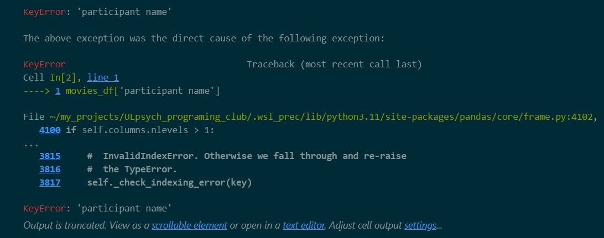

import pandas as pd #importing the pandas module
# initialise some list objects that contains our data, this could also be a list of lists, or a dict of lists for example
import numpy as np #importing a module to allow me to include 'missing data
director = ['John Carpenter', '', 'Nicolas Winding Refn', 'Matthijs van Heijningen', 'Damien Chazelle', 'Dennis Villanueve', 'Coen Brothers', 'Kelly Asbury', 'Edgar Wright', 'Coen Brothers']
names = ['The Thing', 'Blade Runner 2049', 'Drive', 'The Thing', 'Whiplash', 'Arrival', 'No Country for Old Men', 'Shrek 2', 'Hot Fuzz', 'Fargo']
genre = ['Horror', 'Sci-Fi', 'Action', 'Horror', 'Drama', 'Sci-Fi', 'Drama', 'Comedy', 'Comedy', 'Dark Comedy']
year = ['1982', '2017', '2011', '2011', '2014', '2016', '2007', '2004', '2007', '1996']
imdb_score = [82, 80, 78, 62, np.nan, 79, 82, 73, 78, 81]
rt_critics = [82, 88, 93, 34, np.nan, 94, 93, 89, 91, 94]
lead = ['male', 'Male', 'm', 'Female', 'm', 'Male', 'fem', 'Orgre', 'Male', 'Male']
cry = ["No", "No", "No", "No", "No", "Yes", "No", "Yes", "No", "No"]
movies_df = pd.DataFrame(
list(zip(director, names, genre, year, imdb_score, rt_critics, lead, cry)), # first argument, passing a list of lists to the zip function
columns = ['Participant Name', 'Title of Thing', 'Genre', 'Year of Release', 'ImdB Score', 'Rotten Tomatoes Score ', 'Gender of Lead', "Make Me Cry?"]# second argument , passing a list to the columns arguments
)# closing the first pair of brackets to complete the function callSession 2.1
Make the kind of data you want to see in the world
Welcome back!
- Last sesstion we took a look at importing data into a Pands
DataFrame, using.read_csv()andPathobjects. - We also introduced you to the structure of a
DataFramethroughclass methodslike.head()and.tail()(which display the top and bottom of yourdfrespectively)
- and
attributeslike- the
df.shape
- the
df.columns - and the
df.index.
- the
This session
- This session we’re going to look at some options for cleaning a
DataFramessuch as droppingunneededcolumnsandrows- standardising or
renamingcolumns - as well as some other cool things (like )
slicingyour data, and ‘fixing’ inconsistent data.
Recap quiz and activity.
- Before we get into that though, we need to import some data to work with so this is a good time to practice what you learned last session
- This time, we’re going to use the quiz to prompt your steps to get data imported and inspected.
- Go to the usual place on brightspace and find the quiz for this session (recap quiz 2.1)
- This will walk you through the steps to import the data we will be working with today.
Recap quiz and activity.
- Import the packages pandas and pathlib (don’t forget the ‘as’ bit; make sure you have selected the kernel related to your virutal environment)
- Download the data for this session from brightspace and save it to your computer (into the data folder you previously made)
- Create a
Path()to the data - Import your data into a Dataframe by using the Path() you have created (n.b. assign the
DataFrameto a variable, and remember that we often use the shorthand ‘df’ when doing so) - Display the head and tail of your dataframe to ensure that it has been imported correctly.
This week’s data
A closer look at the data
- You already know how to take the wide view of your data with
head(),tail()and.shape, and those things are really useful but, especially with really largedataframesor unprocessed (messy) dataframes, we also need to be able to get a more focused view of sections of our data. - Pandas has a lot of different ways to do this, some of which are interchangeable, and we’re going to spend the next little while introducing you to some of them.
Recap of slicing and indexing
One of the most valuable operations you can perform to get a more focused view of your data is
slicing.Before we learn about slicing, let’s recap on indexing (slicing is essentially an extension of indexing).
Remember that we have an object (
string,list, etc) then each element in that object has a position.Indexing enables us to identify the which element is in a given position within that object. Let’s say we have a list assigned to the variable, my_list
Recap of slicing and indexing
- If we want to identify the first, fourth, and last element within my list, then we can use indexing to do that.
Recap of slicing and indexing
- Above we used positive indexing (where the index positions we use to identify elements start from 0 and increase from there).
- But we can also use negative indexing, which is really handy when you have a large object, and want to identify the last element within that object, and you do not know how many elements are in that object.
Recap of slicing and indexing
- While the values we have used to index an element have changed, the output is the same.
- While indexing is useful, it is also limited. Each time we can extract only one particular element within my object. But what if we wanted to extract several elements all at once?
my_object[start_value:stop_value]
Recap of slicing and indexing
- You may have remember that while the element at the position of the start value is included in our
slice - the element at the position of our stop_value is not.
- This is because when we are slicing, our start_value is inclusive, but our stop_value is exclusive.
- If I wanted to include ‘dorritos’ into this smoothie of hell, I need to select one index position further
Recap of slicing and indexing
- Slicing is a rather apt name - it slices up our object to return a list of elements. We just need to tell Python how we want to slice our cake.
- For example, if I wanted to slice from our second element onwards, I could run the following code
['bananas', 'cauliflower', 'dorritos', 'enchiladas', 'fajitas', 'ginger', 'honey']- By leaving an empty space in place of the stop_value, we are telling Python to begin at the start_value, and then include everything after that within our list.
Recap of slicing and indexing
- If we wanted to Python to start at the beginning of the object, and to return each element within a list up to a certain element, then we can leave an empty_space in our slice syntax
Recap of slicing and indexing
- Hopefully you can that slicing gives us a lot of flexibility, even if you are probably wondering when such functionality will come in handy. We will get on to that throughout the workshops (including todays one)
- Negative indexing also works with Python, and not only that, but you can also combined positive and negative indexing too.
- We can also use slicing on strings as well as lists.
Recap of slicing and indexing
- Before we move on to slicing a dataframe, there is one last piece of the slicing syntax that you need to know about.
- Not only can we specify a range for Python to slice out, we can specify the
stepsto that slicing:
my_object[start_value:stop_value: steps]
Recap of slicing and indexing
- In example 1,
print(my_list[::2]) - since we have a left a blank space in our start_value and our stop_value, we have asked Python to essentially to span across all the elements within our object.
Okay, let’s see what we can do with slicing in relatiion to Dataframes.
Slicing our Dataframe
- You’ve already sliced a dataframe before.
.head()and.tail()slice your dataframe to the top or bottom five rows- We can slice a custom number of
rowsfrom ourDataFrame, using the samesyntaxfrom earlier.
| Participant Name | Title of Thing | Genre | Year of Release | ImdB Score | Rotten Tomatoes Score | Gender of Lead | Make Me Cry? | |
|---|---|---|---|---|---|---|---|---|
| 8 | Edgar Wright | Hot Fuzz | Comedy | 2007 | 78.0 | 91.0 | Male | No |
| 9 | Coen Brothers | Fargo | Dark Comedy | 1996 | 81.0 | 94.0 | Male | No |
Slicing our Dataframe
The syntax for slicing a dataframe goes something like this:
dataframe[row_start_value:row_end_value:steps]
The steps argument is optional, and if you leave it out, Python will default to 1.
Slicing with this syntax returns the rows of a dataframe. It will not select specific columns to display.
Slicing our Dataframe - columns
- If we want to select columns then there’s a few ways to do that.
- The first way is to pass a list of the columns that you want to select within the square brackets we’re using for indexing.
| Participant Name | Title of Thing | Genre | |
|---|---|---|---|
| 0 | John Carpenter | The Thing | Horror |
| 1 | Blade Runner 2049 | Sci-Fi | |
| 2 | Nicolas Winding Refn | Drive | Action |
| 3 | Matthijs van Heijningen | The Thing | Horror |
| 4 | Damien Chazelle | Whiplash | Drama |
Slicing our Dataframe - columns
- Another option is to pass a
sliceof thedf.columnsattribute.
| Participant Name | Title of Thing | Genre | |
|---|---|---|---|
| 0 | John Carpenter | The Thing | Horror |
| 1 | Blade Runner 2049 | Sci-Fi | |
| 2 | Nicolas Winding Refn | Drive | Action |
| 3 | Matthijs van Heijningen | The Thing | Horror |
| 4 | Damien Chazelle | Whiplash | Drama |
Slicing our Dataframe - location slicing
- But what if we want to select specific columns, and specific rows?
- There’s two ways to do this as well:
- The first is the
locmethod, which enables us to select rows and columns based on theirlabels- You’ve seen this one before when we talked about
df.index
- You’ve seen this one before when we talked about
- The second is the
ilocmethod, which enables us to select rows and columns based on theirindex position
- The first is the
Slicing our Dataframe - location slicing
- The
locmethod enables us to select rows and columns based on their labels. - Remember when we set the
bands_df.indexattribute to be theParticipant Namecolumn? - And then used
bands_df.loc["John Lennon"]to return that row? - Well the loc method actually lets us do a lot more, but the
syntaxis a little complex.
Slicing our Dataframe - location slicing
| Title of Thing | Genre | Year of Release | |
|---|---|---|---|
| 0 | The Thing | Horror | 1982 |
| 1 | Blade Runner 2049 | Sci-Fi | 2017 |
| 2 | Drive | Action | 2011 |
- Take a look at this code.
- Try to spot the similarities between this code and the code we used to slice our list earlier.
- But also the unexpected change in behaviour!
Slicing our Dataframe - location slicing
- Essentially, we’re passing 2 slices (separated by a comma) to the
locmethod. - The first slice is for the rows, and the second slice is for the columns.
- And in both instances we’re using the
labels(Note that most of the time therow labelswill be the numberical index, unless you have set the index,.set_index(), to be something else) - If we want to select all the rows, we can leave the row slice empty.
movies_df.loc[:, "Participant Name":"Year of Release"]
- If we want to select all the columns, we can leave the column slice empty.
movies_df.loc["John Carpenter":"Damien Chazelle", :]
Slicing our Dataframe - location slicing
- The last thing we can do with .loc is to select rows with specific values in a column.
movies_df.loc[movies_df["Genre"] == "Sci-Fi"].head() # note the '==' operator
# This is a boolean operation, and will return a dataframe with only the rows that have 'Sci-Fi' in the 'Genre' column| Participant Name | Title of Thing | Genre | Year of Release | ImdB Score | Rotten Tomatoes Score | Gender of Lead | Make Me Cry? | |
|---|---|---|---|---|---|---|---|---|
| 1 | Blade Runner 2049 | Sci-Fi | 2017 | 80.0 | 88.0 | Male | No | |
| 5 | Dennis Villanueve | Arrival | Sci-Fi | 2016 | 79.0 | 94.0 | Male | Yes |
Slicing our Dataframe - i location slicing
- If, instead of using labels, we want to select rows and columns based on their index position, then we can use the
ilocmethod. - The
ilocmethod is similar to thelocmethod, but instead of using labels, we use index positions.
Booleans
- Before we move on to cleaning our dataframe, we need to talk about
booleans. - Booleans are a data type that can only have one of two values:
TrueorFalse. - Booleans are really useful when we want to filter our data based on a condition.
- For example, when we wanted to filter our data to only show the rows where the
Genrecolumn is equal toSci-Fi, we used==.
Boolean operators
- The
==operator is a boolean operator that checks whether two values are equal (remember that the=operator is used to assign a value to a variable).- If the values are equal, then the
==operator returnsTrue, otherwise it returnsFalse.
- If the values are equal, then the
Boolean operators
- There’s lot’s of other boolean operators that you can use to filter your data.
!=means not equal to>means greater than<means less than>=means greater than or equal to<=means less than or equal to
- We can use all these to filter our data based on a condition (as well as to do other things, but we’ll get to that later)
Filtering - practice
- I know you’ve seen a lot so far, but I’m going to get you to practice some of the things we’ve covered so far.
- In a cell in your notebook, use
enumerateto print the position and value of each column in yourdf.columns - Then use the
locmethod to select the first 5 rows of your dataframe, but only the columns that contain theParticipant Name,Title of Thing, andGenreof the movie. - See if you can use
ilocto do the same thing. - Then use the
locmethod to select the rows where theImdB Scoreis greater than 80.
df.loc[df["col_name"] boolean_operator value]
Did you notice?
- While
slicingstrsandlistsis not inclusive of thestop_value loc[] slicingDataFramesis inclusive of thestop_value.iloc[] slicingDataFramesis not inclusive of thestop_value- So when you’re using labels, you get everything up to and including the
stop_value - When you’re using index positions, you get everything up to but not including the
stop_value - This is annoying to remember, but it’s actually better in practice.
Cleaning our Dataframe
- Now that we’ve covered slicing, we can start to clean our dataframe.
- The first thing we might want to do is make the columns easier to work with.
- For example, in the existing columns, there are spaces, some words are capitalised, and some are not
- This makes tricky because python can’t infer that ‘Participant Name’ and ‘participant name’ mean the same thing.
- You have to type the column name exactly as it appears in the dataframe.
- In your notebook, try calling a column that you know is in your dataframe, but only type in lowercase. What happens?
KeyError
keyerror
KeyError
- If you get a
KeyError, it means that the column you are trying to access does not exist in your dataframe. - This is because Python is case sensitive, and the column name you have typed does not match the column name in your dataframe.
- This is a common error, and can be really frustrating to debug.
- The best way to avoid this error is to make sure that your column names are consistent, and easy to type.
- We can do this by using the
renamemethod with somestrmethods
Renaming columns - option 1
- The first way to rename columns is to use the
renamemethod. - The
renamemethod takes a dictionary as an argument, where thekeysare the old column names, and thevaluesare the new column names. - This is a really useful method, because it enables you to rename multiple columns at once.
- So if we just wanted to rename the
Participant Namecolumn toDirector, we could do this:
Renaming columns - option 1
- You can also use the
.rename()with the for loop as we did in a previous session
Renaming columns - option 2
- Another option is to use what’s called a
list comprehension. - I. Love.
List.Comprehensions. - Basically they’re list putting a
for loopinside alist
list comprehensions
list comprehensionswork like this
[do_thing(placeholder) for placeholder in collection]
- They can be simply called in place or we can
returna new list to us. - We can also call
methodsinstead offunctions
[placeholder.do_thing() for placeholder in collection]
Renameing with list comprehensions
- We can use also use
list comprehensionswith therenamemethod - we just combine the
dict(zip(...))syntaxwe’ve seen before - As if we had the BFI_44 in our data set starting at column 10
df.rename(columns = dict(zip(df.columns[10:55], [f"bfi_{i}" for i in range(1, 45)]))
Renaming recap
- So you can see there’s multiple ways to rename columns in a dataframe
- You can use the
renamemethod with a dictionary - You can use a
for loopwith therenamemethod - You can use a
list comprehensionto rename columns (my favourite way to just apply astrmethod to all the columns) - You can use a
list comprehensionto rename columns with adict(zip(...))syntax
- You can use the
Renaming str methods
- You’ve seen the
.upper(),.lower(), and.title()strmethods before - You also just seen the
.replace()strmethod - but there’s others like
.strip()which removes whitespace from the beginning and end of a string (hidden spaces or newlines) - in your notebook try using each of the renaming strategies we’ve covered so far to rename the columns in your dataframe
- just use a different string method each time (
.lower(), .strip(), .replace(' ', '_')) - And as the most important part look up each
strmethod online
Working with Our dataframe
- Okay, so let’s actually get working with the dataframe that we have. The first thing we are going to do is view our dataframe, just to remind ourselves what it looks like.
- Since the dataframe is relatively small, I am going to cheat a little bit and view the entire dataframe, rather than using the head or tail functions.
Let’s view our dataframe
director title_of_thing genre year_of_release \
0 John Carpenter The Thing Horror 1982
1 Blade Runner 2049 Sci-Fi 2017
2 Nicolas Winding Refn Drive Action 2011
3 Matthijs van Heijningen The Thing Horror 2011
4 Damien Chazelle Whiplash Drama 2014
imdb_score rotten_tomatoes_score gender_of_lead make_me_cry?
0 82.0 82.0 male No
1 80.0 88.0 Male No
2 78.0 93.0 m No
3 62.0 34.0 Female No
4 NaN NaN m No Let’s view our dataframe.
- For the most part, the dataframe looks alright, but it is not perfectly clean.
- We’ve already cleaned up the column names but:
- There are missing values (either empty or
np.nan), - there are some inconsistent values (“Male” vs “m” vs “male”),
- classic data entry mistakes (Orgre when clearly it should be spelled Ogre),
- and there are columns that we are unlikely to need in our analysis (e.g., Did the movie make me cry or not?).
- There are missing values (either empty or
Let’s view our dataframe.
- There also some data points that we may want to add to the dataframe (for example, average review score across ImdB and Rotten Tomatoes, length of the movie).
- Overall, the dataframe is not ready for meaningful statistical analysis.
- For the rest of this workshop, we are going to be showing you some tools that you can use to clean up the dataframe, so that it is ready for a more exhaustive analysis.
Missing Data
- Nearly every dataframe that you will work with is likely to contain missing data.
- There are two main types of missing numerical data in Python.
- A standard missing value is typically recorded in Python as
NaN, which refers to a “not a number” value, or a “null” value. - The first thing we can do is check whether we have standard missing values labelled ‘NaN’. We can do this by using the isnull() function.
.isnull()
- The
isnull()function will return our dataframe. It checks each entry our dataframe and asks the question “Is this a NaN” value? - If there is NaN value, it returns a “True” value (in a numerical column).
- We can see from the output on the next slide that we have a couple of missing values in fifth row (index 4) under the columns
ImDbscore andRotten Tomatoes Score - But if you notice the ‘director’ column also has empty valuse, but because this is not a ‘numeric’
column.
.isnull()
movies_df.isnull() #This will go through our dataframe and check
#for whether we have any missing numeric values| director | title_of_thing | genre | year_of_release | imdb_score | rotten_tomatoes_score | gender_of_lead | make_me_cry? | |
|---|---|---|---|---|---|---|---|---|
| 0 | False | False | False | False | False | False | False | False |
| 1 | False | False | False | False | False | False | False | False |
| 2 | False | False | False | False | False | False | False | False |
| 3 | False | False | False | False | False | False | False | False |
| 4 | False | False | False | False | True | True | False | False |
| 5 | False | False | False | False | False | False | False | False |
| 6 | False | False | False | False | False | False | False | False |
| 7 | False | False | False | False | False | False | False | False |
| 8 | False | False | False | False | False | False | False | False |
| 9 | False | False | False | False | False | False | False | False |
.isnull()
- We can see from the output above that we have a couple of missing values in fifth row (index 4) under the columns
ImDbscore andRotten Tomatoes Score - In future sessions, we will show you how to work with
NaNresults (other than deleting them). - But for now, we do not want to deal with the hassle of having NaN results,
- so we are going to
dropany row that has aNaNresult (where isnull() == True)
.dropna()
- We can do this by using the
dropna()function - which means,
dropany row that has a null/NaN result”.
.dropna()
- We store the resulting dataframe,without the NA results
- We call it
movies_df_cleanv1. - This way we still have access to the raw file within this notebook if we need it.
- For example, if we needed to go back and view values from a row we’ve deleted.
Empty but no empty
- The other type of missing value is a non-standard missing value.
- A non-standard missing value usually occurs when there is a cell that looks “empty” to us, but from Python’s perspective there is a value there.
- For example, we can see that in the second row, that from our perspective, there is an empty cell under
participant name. However, from Python’s perspective, there is a value there: an empty string" ".
Empty but not empty
`.replace()’
- There are multiple ways to deal with this, but what we are going to do is use
.replace() - We’ll
replace() any missing values with aNaN` result, - Thenremove that row from the dataframe.
- Basically, we convert a non-standard missing value into a missing value.
| director | title_of_thing | genre | year_of_release | imdb_score | rotten_tomatoes_score | gender_of_lead | make_me_cry? | |
|---|---|---|---|---|---|---|---|---|
| 0 | John Carpenter | The Thing | Horror | 1982 | 82.0 | 82.0 | male | No |
| 2 | Nicolas Winding Refn | Drive | Action | 2011 | 78.0 | 93.0 | m | No |
| 3 | Matthijs van Heijningen | The Thing | Horror | 2011 | 62.0 | 34.0 | Female | No |
| 5 | Dennis Villanueve | Arrival | Sci-Fi | 2016 | 79.0 | 94.0 | Male | Yes |
| 6 | Coen Brothers | No Country for Old Men | Drama | 2007 | 82.0 | 93.0 | fem | No |
| 7 | Kelly Asbury | Shrek 2 | Comedy | 2004 | 73.0 | 89.0 | Orgre | Yes |
| 8 | Edgar Wright | Hot Fuzz | Comedy | 2007 | 78.0 | 91.0 | Male | No |
| 9 | Coen Brothers | Fargo | Dark Comedy | 1996 | 81.0 | 94.0 | Male | No |
`.replace()’
- There are moresophisticated ways of handling NaN data.
- But for now, we have a dataframe that has usable (if imperfect) data in each cell.
- Our next steps are to clean up some entries in our dataframe, and fix inconsistent data entries.
Dropping Columns
- Often, we get data sets that contain variables (
columns) that we don’t need - As when working with Quatrics data that contains columns like ‘Conscent’ and ‘ResponseIP_Address’
- We can use the
drop()method
.drop()
df.drop('label', axis = 1)
- As you can see the
drop() methodtakes 2arguments- The label of the thing you want to
drop - The
axisof the thing you want todrop
- The label of the thing you want to
- The
axisargument just states whether your dropping rows or columnsaxis = 0relates torowsaxis = 0relates tocolumns
axis
axis image
more practice!
- In you’re own notebook create a new cell
- drop the “make_me_cry?” column (but put the outcome in a new variable
Inconsistent Data
Now that we have columns that we want to work with, let’s clean up inconsistent data entries.
We can see that within our column, “Gender of Lead”, that there are inconsistent values. Male is sometimes coded as “male”, or “m”. Female is sometimes codes as “fem”. But it is good to get a quantitative idea of the different values that are entered within this column. One function we can use to identify the different values that are within a column, and also how many times that value appears within the column, is the function value_counts().
The first thing we need to do is select (aka slice) the particular column that we want, and then use the value_counts function.
Okay we can see that our Gender of Lead is all over the place. Rather than having 6 Males and 2 females, we have 3 ‘Males’, 1 ‘m’, 1 ‘male’, 1 ‘Orgre’, 1 ‘Female’, 1 ‘fem’. The values used to code our data is inconsistent. So let’s fix it by using the replace function.
```{python}
movies_df_cleanv2.iloc[:, -1:] = movies_df_cleanv2.iloc[:, -1:].replace(to_replace = ["Orgre", "m"], value = "Male")
#the syntax for the following code is:
#dataframe.replace(list_with_values_to_replace = ["Old Value1"...."Old ValueN"], value = "New Value1")
```Now we could have also replaced the lowercase male, but we will show another method you use to handle cases where inconsistent values are related to capitalisation.
First let’s fix the female values
```{python}
#Take the syntax from the previous code cell and use replace "fem" with "female" for the "Gender of Lead" column
```Okay, now let’s fix our capitalisation issue. We can do that by using the str.capitalise() method.
```{python}
movies_df_cleanv2['Gender of Lead'] = movies_df_cleanv2['Gender of Lead'].str.capitalize()
movies_df_cleanv2
```Now there’s a few things going on here.
1st. Instead of slicing our dataframe the way we have been showing you so far movies_df_cleanv2.iloc[:, -1:], we instead selected our column by using actual name of the column. This is a perfectably acceptable way to select a column.
2nd. We use the str. function to treat everything inside our column as a string.
3rd. Then we call the capitalise() method on our strings in order to capitalise the first letter. There are other functions that we could apply instead of capitalise. For example, we could use str.upper() to transform every value into UPPER CASE. Or we could str.lower to transform every value into lower case. Feel free to toy around with them in the example above.
```{python}
#Use the value counts function on the Genre column and see what type of movie pops up the most often in our dataset.
```Adding to our Dataframe
Run the cell below to let us look at our dataframe again.
Hopefully if you have gotten to this stage, the columns are appropriately labelled, there are no missing values, and values are consistent within columns. It should look in a lot better shape. If not, then do not worry, just let us know. :)
Add Rows
Our dataframe is pretty small though right. And there aren’t that many movies in there with a female lead, so how can we rectify that?
Well with pandas, it is relatively handy to add (or append) rows to a dataframe.
```{python}
new_rows = {'Director': ['Ridley Scott', 'Greta Gerwig'],
'Movie': ['Alien', 'Lady Bird'],
'Genre': ['Horror', 'Drama'],
"Year of Release": ['1979', '2017'],
"ImdB Score": [85, 74],
"Rotten Tomatoes Score": [98, 99],
"Gender of Lead": ["Female", "Female"]
}
df2 = pd.DataFrame(new_rows)
movies_df_cleanv3 = movies_df_cleanv2.append(df2, ignore_index="True")
movies_df_cleanv3
```Wahey! Although there is still a gender imbalance, we are definitely healthier on male/female actor lead (the director situation is a different story).
But what went on to achieve that? Well, there’s a few things to note:
The first thing is we created a dict object, new_rows, containing our column names (dict keys) and column values (dict values). Because we are adding more than one value per column name, we enter the column values as a list. This enables Python to create multiple rows per each column.
The second thing is that we turned these dict into a dataframe, called df. This is because it is much more straightforward to add multiple rows to an existing dataframe, if those rows are in the shape of a dataframe.
The third thing is that we set ignore_index = True. The index refers to the co-ordinate system we have been using to slice our dataframe. The two dataframes, movies_df_cleanv2 and df2, will have their own indices. For example, the value in row 1, column 1, in movies_df_cleanv2 is “John Carpenter”, whereas the same co-ordinates in df2 return “Ridley Scott”.
To set ignore_index to true simply means to combine the two dataframes under one co-ordinate system, rather than keeping their own specific co-ordinate systems. Don’t worry if this is still sounding too abstract, you do not need to know it for now.
Add column
At the moment, our columns contain Rotten Tomatoes score from critics. But what if we wanted to add in the Rotten tomatoe scores from fans? We can do that fairly easily with pandas dataframes.
```{python}
#first let's create a list that will be converted into a column within our dataframe
rt_fans = [92.0, 79.0, 42.0, 82.0, 86.0, 69.0, 89.0, 93.0, 94.0, 79.0] #By the way, how in the hell does Shrek 2 only have a 69% on rotten tomatoes? What kind of sick joke is that?
#Now let's create a column within our dataframe, and then set its values to rt_fans
movies_df_cleanv3["Rotten Tomatoes Fans' Scores"] = rt_fans
movies_df_cleanv3
```Nice, we have the fans opinion in there too for Rotten Tomatoes. But ideally we would want it next to the Rotten Tomatoes Critics scores. Let’s re-order our dataframe
```{python}
movies_df_cleanv3 = movies_df_cleanv3[["Director", "Movie", "Genre", "Year of Release", "ImdB Score", "Rotten Tomatoes Score", "Rotten Tomatoes Fans' Scores", "Gender of Lead"]]
movies_df_cleanv3.head()
``````{python}
## What if we wanted to know whether the lead actor won an oscar or not?
#Take the following list, and add it as a column in the dataframe
#oscar = ["No", "No", "No", "No", "Yes", "No", "No", "Yes", "No", "No"]
```Well done. We have convered a lot this week. Do not worry if a lot of these ideas have not sunk in. That’s normal.
Our recommendation would be to practice with your own dataframes. Practice will help this all sink in.
In the cells below this one you can practice with the csv version of the raw data.
- save a version of the your df that doesn’t have any empty cells
- scan for inconsistent data
- see if you can fix it
- drop columns you don’t need, or use
ilocto save a version of the data that doesn’t have the extra columns in it.
Next week, we will start looking at more sophisticated methods to handle missing values, how we can sort our dataframe, and start with calculating some descriptive statistics.
Until next time,
Kev & Ryan.